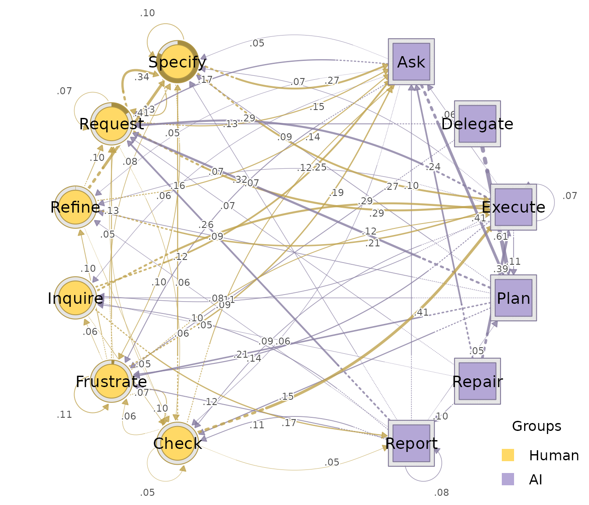
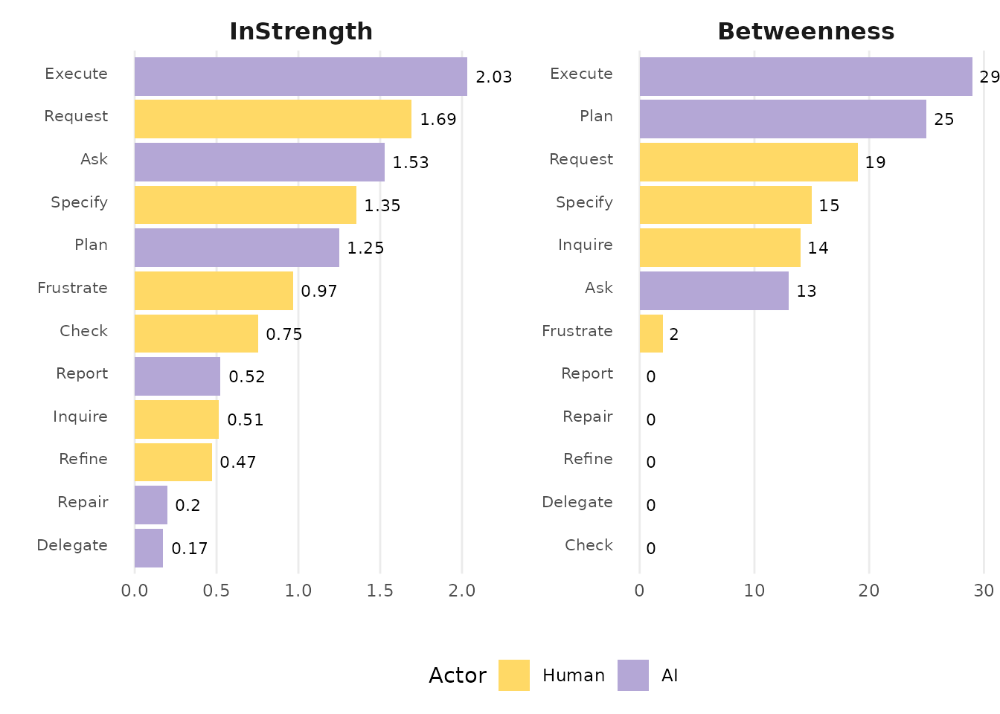
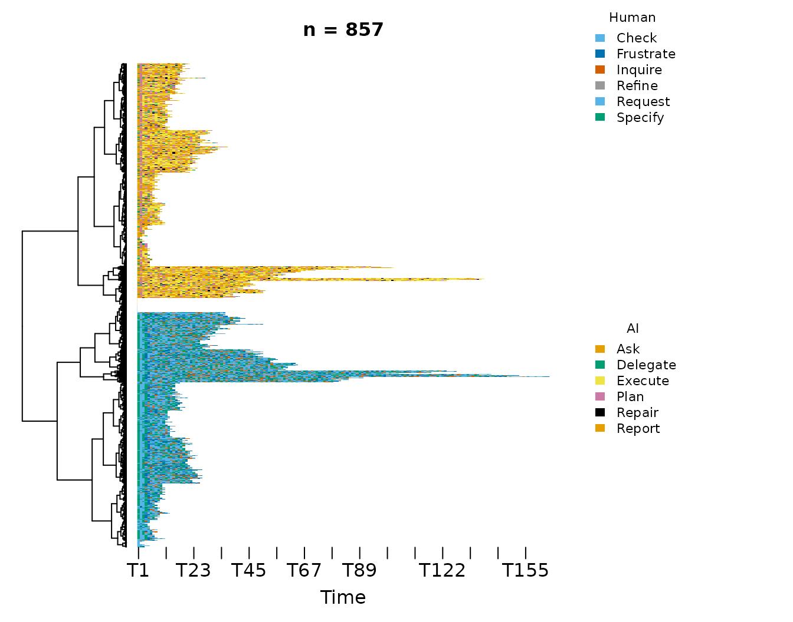
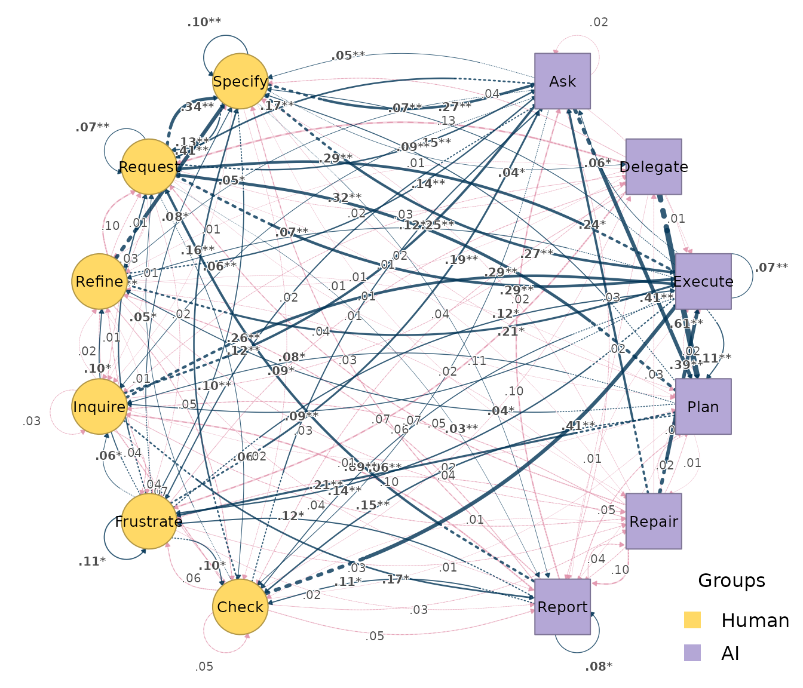

Heterogeneous transition network analysis
Written by Mohammed Saqr and Sonsoles López-Pernas
Source:vignettes/htna.Rmd
htna.RmdMany interactions in education and work are carried out by actors of different kinds: a learner and a tutor, a student and a generative AI assistant, a programmer and a coding agent. A record of such an interaction is a sequence of coded events in which the actors take turns, and the questions it raises concern both what each actor does and how the actors respond to each other. Transition network analysis (TNA) models a sequence of events as a network whose nodes are the codes and whose weighted, directed edges are the probabilities of moving from one code to the next. Applied to a mixed sequence, ordinary TNA treats all codes alike and loses the information that some codes belong to one actor and some to another.
Heterogeneous transition network analysis (HTNA) keeps that information. Each code is assigned to one actor type, the network is estimated over the interleaved sequence so that transitions within and between actors are counted from the same events, and the actor partition is carried through every subsequent step: the layout and colours of the plot, the summaries of transitions within and between actors, and the patterns of turn-taking (López-Pernas, Misiejuk, & Saqr, 2026). This vignette sets out the formulation and follows one analysis from data to assessed conclusions.
The model
A session is a sequence of coded events , and every code belongs to exactly one actor type , for example Human or AI. Counting, over all sessions, how often code is directly followed by code gives the counts . The relative transition network has the weights
the estimated probability that an event coded is followed by an event coded . The actor partition divides the weight matrix into blocks , holding the transitions from codes of actor to codes of actor . The diagonal blocks () describe how an actor continues its own turn, and the off-diagonal blocks describe the handovers between actors. Because each row of sums to one, the row sum of code within block , , is the probability that an event coded is followed by an event of actor . A meta-path is the sequence of actor types that a path of codes passes through, such as Human AI Human.
Data
human_ai holds the coded turns of 429 sessions in which
programmers worked with an AI coding agent (“vibe coding”), from 34
projects. Each row is one coded event; a message can carry several
codes.
-
Session:
session_ididentifies the sequence; transitions are counted within sessions. -
Order:
order_in_sessionorders the events within a session. -
Code:
codeis the event code, six for the human (Check,Frustrate,Inquire,Refine,Request,Specify) and six for the AI (Ask,Delegate,Execute,Plan,Repair,Report). -
Actor type:
actor_type("Human"or"AI") assigns each event to its actor. -
Phase:
phase(Early,Late) splits the sessions chronologically in half; it is used in the grouped vignette.
The 19,347 events consist of 10,796 human and 8,551 AI events.
Building the network
The network is estimated with build_htna(), which takes
the data and the name of the column that assigns each event to its
actor.
net <- build_htna(human_ai, actor_type = "actor_type")
summary(net)
#> <htna network>
#> Method: relative
#> Sessions: 429 (max 287 timesteps)
#> Nodes: 12
#> Edges: 135 / 144 (non-zero)
#>
#> Actor types (2):
#> Human (6 nodes): Check, Frustrate, Inquire, Refine, Request, Specify
#> AI (6 nodes): Ask, Delegate, Execute, Plan, Repair, Report
#>
#> Edge counts by actor (rows = source, cols = target):
#> Human AI
#> Human 35 36
#> AI 36 28
#>
#> Network metrics:
#> metric value
#> Node Count 12.0000
#> Edge Count 135.0000
#> Network Density 1.0000
#> Mean Distance 0.0274
#> Mean Out-Strength 1.0000
#> SD Out-Strength 0.0000
#> Mean In-Strength 1.0000
#> SD In-Strength 0.6309
#> Mean Out-Degree 11.2500
#> SD Out-Degree 0.9653
#> Centralization (Out-Degree) 0.0579
#> Centralization (In-Degree) 0.0579
#> Reciprocity 0.9600The network has 12 nodes, six per actor, and 135 of its 144 possible edges are non-zero. Within the human codes 35 of the 36 possible transitions occur, and in each between-actor block all 36. The AI block is the sparsest, with 28 non-zero edges: some AI codes rarely follow one another directly.
How the actors hand over
The edge table lists every non-zero transition with the actor types of its source and target, so that within-actor transitions and handovers can be read side by side.
head(as.data.frame(net))
#> from to weight source_actor target_actor
#> 1 Ask Ask 0.0182 AI AI
#> 2 Ask Check 0.0632 AI Human
#> 3 Ask Execute 0.0221 AI AI
#> 4 Ask Frustrate 0.1158 AI Human
#> 5 Ask Inquire 0.0632 AI Human
#> 6 Ask Plan 0.4088 AI AIEach row is one edge; for example, an AI Ask is followed
by a human Frustrate with probability 0.116 and by an AI
Plan with probability 0.409. The counts per actor-pair
block summarize the same table.
as.data.frame(summary(net), what = "actor_pairs")
#> source_actor target_actor n_edges
#> 1 Human Human 35
#> 2 Human AI 36
#> 3 AI Human 36
#> 4 AI AI 28The network plot
plot_htna() draws the network with the codes of each
actor on their own arc, in the actor’s colour and shape; edges below
0.05 are not drawn.
plot_htna(net)
Edge width is proportional to the weight, and only the 73 edges with a weight of at least 0.05 are drawn (the same edges that the pruning step below keeps), so the plot shows the transitions that carry the interaction.
Which codes are central
Centralities rank the codes by their position in the network. In-strength is the total transition weight flowing into a code, out-strength the weight leaving it, and betweenness the number of shortest paths through it.
centralities_htna(net, measures = c("InStrength", "OutStrength",
"Betweenness"))
#> node actor InStrength OutStrength Betweenness
#> 1 Ask AI 1.527 0.982 13
#> 2 Check Human 0.752 0.950 0
#> 3 Delegate AI 0.174 1.000 0
#> 4 Execute AI 2.034 0.926 29
#> 5 Frustrate Human 0.967 0.886 2
#> 6 Inquire Human 0.515 0.967 14
#> 7 Plan AI 1.250 0.997 25
#> 8 Refine Human 0.470 1.000 0
#> 9 Repair AI 0.200 0.996 0
#> 10 Report AI 0.525 0.923 0
#> 11 Request Human 1.693 0.933 19
#> 12 Specify Human 1.353 0.899 15Execute receives the most transition weight (in-strength
2.03) and lies on the most shortest paths (betweenness 29), followed on
in-strength by the human Request (1.69). The out-strengths
are all close to one because each row of a relative network sums to one,
less any self-transition. The interaction is organized around the
request-and-execute exchange.
plot_centralities(net, measures = c("InStrength", "Betweenness"),
by = "group")
Focusing on the strong transitions
Pruning sets weak edges aside so that the structure carried by the strong transitions can be read.
pruned <- prune_htna(net, threshold = 0.05)
as.data.frame(summary(pruned), what = "actor_pairs")
#> source_actor target_actor n_edges
#> 1 Human Human 19
#> 2 Human AI 14
#> 3 AI Human 27
#> 4 AI AI 13At a threshold of 0.05, 73 edges remain. The AI-to-human block keeps 27 of its 36 edges, more than any other block, while the AI-to-AI block keeps 13: after an AI action the next event is most often a human one.
Turn-taking patterns
Meta-paths describe the order in which the actors take turns, regardless of the specific codes.
extract_meta_paths(net, level = "type", length = 3)
#> Meta-paths (type-level) over 429 sequences
#> Rows: 8 | Lengths: 3 | Gaps: 0
#> schema length gap count n_seq support frequency lift
#> Human->AI->Human 3 0 3593 402 0.937 0.194 1.41
#> Human->Human->AI 3 0 3172 422 0.984 0.172 1.25
#> AI->Human->Human 3 0 2828 403 0.939 0.153 1.11
#> AI->Human->AI 3 0 2744 383 0.893 0.148 1.36
#> Human->AI->AI 3 0 2189 403 0.939 0.118 1.09
#> AI->AI->Human 3 0 2100 397 0.925 0.114 1.04
#> Human->Human->Human 3 0 1472 396 0.923 0.080 0.46
#> AI->AI->AI 3 0 392 165 0.385 0.021 0.25The alternating meta-path Human AI Human is the most frequent (3,593 occurrences in 402 sessions) and occurs 1.41 times as often as the frequencies of the two actors would predict. Runs within one actor are rare by the same standard: three consecutive human events have a lift of 0.46 and three AI events of 0.25. The interaction is a dialogue of short turns.
A schema lists the concrete paths behind one meta-path.
print(extract_meta_paths(net, schema = "Human->AI->Human"), n = 5)
#> State-level instances of schema 'Human->AI->Human' over 429 sequences
#> Rows: 163 | Lengths: 3 | Gaps: 0
#> schema meta_schema length gap count n_seq support frequency lift
#> Request->Execute->Request Human->AI->Human 3 0 401 194 0.452 0.112 5.00
#> Specify->Execute->Request Human->AI->Human 3 0 176 107 0.249 0.049 2.33
#> Request->Ask->Request Human->AI->Human 3 0 130 91 0.212 0.036 2.19
#> Check->Execute->Request Human->AI->Human 3 0 123 96 0.224 0.034 3.67
#> Specify->Ask->Request Human->AI->Human 3 0 120 84 0.196 0.033 2.15
#> ... (158 more)The most frequent is a request, an AI execution and a further request (401 occurrences in 194 sessions, five times as often as expected), the iterative loop of directing the agent.
The sessions over time
The network pools the transitions of all sessions and positions. A sequence plot shows the sessions themselves, one row per session and actor, with each cell coloured by its code.
sequence_plot_htna(net, type = "heatmap")
How certain are the edges
The bootstrap resamples the sessions and re-estimates the network to show which edge weights the data determine precisely.
boot <- bootstrap_htna(net, iter = 100, seed = 1)
boot
#> Edge Mean 95% CI p
#> -----------------------------------------------
#> Delegate → Plan 0.609 [0.541, 0.670] **
#> Refine → Specify 0.412 [0.360, 0.468] **
#> Ask → Plan 0.411 [0.384, 0.437] **
#> Check → Execute 0.411 [0.382, 0.444] **
#> Repair → Execute 0.389 [0.333, 0.454] **
#> ... and 55 more significant edges
#>
#> Bootstrap Network [Transition Network (relative) | directed]
#> Iterations : 100 | Nodes : 12
#> Edges : 60 significant / 135 total
#> CI : 95% | Inference: stability | CR [0.75, 1.25]With 100 resamples, 60 of the 135 edges are reproduced within the
consistency range and marked significant; the strongest,
Delegate to Plan, has a mean weight of 0.609
with a 95% interval from 0.541 to 0.670. A real analysis would use the
default 1,000 resamples. The plot draws the non-significant edges
dashed.
plot_htna_bootstrap(boot)
Are the conclusions stable
Two checks ask whether the conclusions depend on the particular sessions observed. Centrality stability drops increasing shares of the sessions and correlates the centralities with those of the full network (Epskamp, Borsboom, & Fried, 2018).
cs <- centrality_stability_htna(net, iter = 100, seed = 1)
as.data.frame(cs)
#> measure cs
#> 1 InStrength 0.9
#> 2 OutStrength 0.9
#> 3 Betweenness 0.9All three measures keep a correlation above 0.7 until 90% of the sessions are dropped (CS coefficient 0.90), well above the recommended 0.5, so the centrality ranking can be reported. Split-half reliability estimates the network from two random halves of the sessions and compares them.
rel <- reliability_htna(net, iter = 100, seed = 1)
summary(rel)
#> model metric mean sd
#> 1 relative mean_dev 0.0125 0.001146
#> 2 relative median_dev 0.0075 0.000883
#> 3 relative cor 0.9820 0.004916
#> 4 relative max_dev 0.0982 0.031284The edge weights of the two halves correlate at 0.982 on average and differ by 0.0125 on average, so the estimated structure does not depend on which sessions happened to be observed.
Further reading
- Grouped heterogeneous transition networks: one network per cohort.
- Input formats, Comparing networks, Model assessment, Markov-order adequacy, Sequences and patterns, Frequencies and mosaic plots, Clustering inputs and Three or more actor groups.
- Case studies: early and late sessions of vibe coding and help-seeking in vibe coding.
References
Epskamp, S., Borsboom, D., & Fried, E. I. (2018). Estimating psychological networks and their accuracy: A tutorial paper. Behavior Research Methods, 50(1), 195–212. https://doi.org/10.3758/s13428-017-0862-1
López-Pernas, S., Misiejuk, K., & Saqr, M. (2026). How AI-generated feedback hinders or helps learning: A heterogeneous TNA study of learning dynamics. Journal of Computer Assisted Learning, 42(4), e70285. https://doi.org/10.1002/jcal.70285